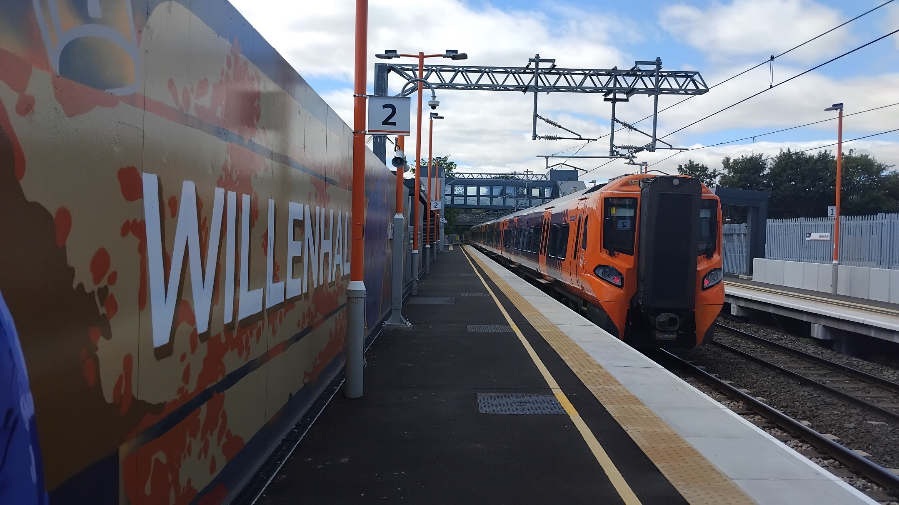

Being in a big urban area has its perks, and over the three and a half years I've been up in the West Midlands, I've visited (got out and had a poke around) every station in the West Midlands County, Warwickshire and Staffordshire. This page - a work in progress for now - will be something of a catalogue of my adventures exploring. I'm not quite sure what form this will take, so stay tuned!